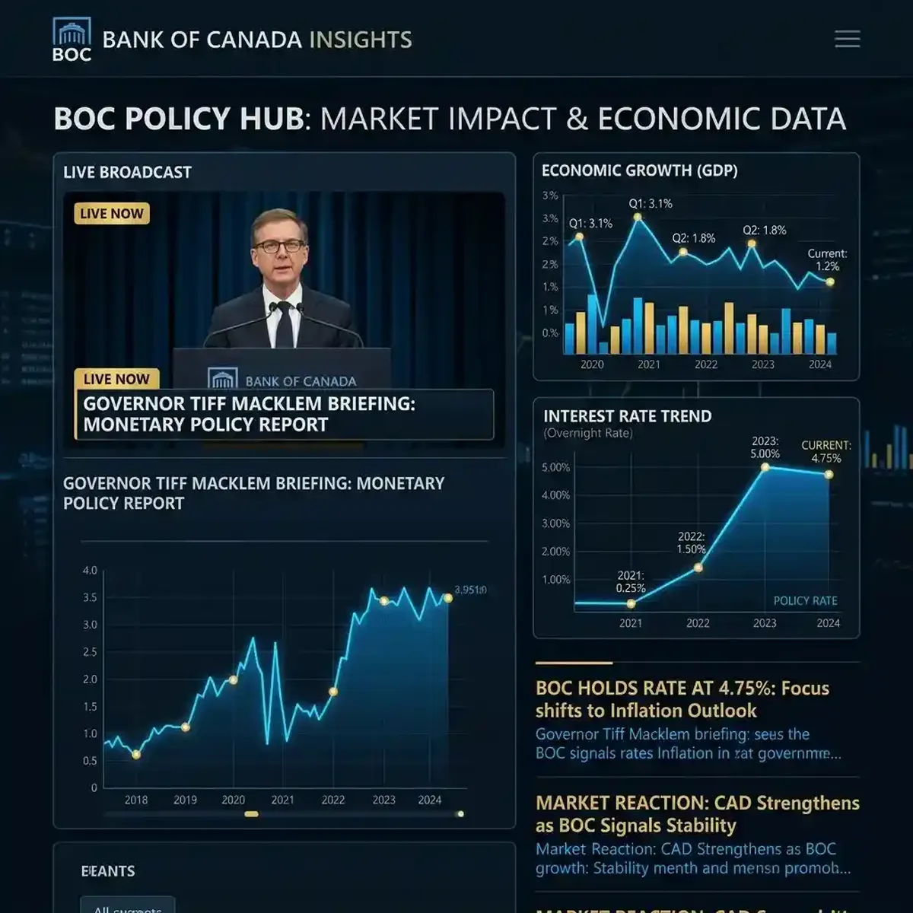

Tracking Canada's Interest Rate Hold: Real-Time Market Reaction Strategy

The Bank of Canada’s decision to hold its key interest rate at 5.0% in March 2026 has major implications for the Canadian economy and the global market.
For investors, homeowners, and economists, the "hold" was largely expected, but the specific language used by Governor Tiff Macklem in the follow-up press conference has triggered a complex set of market reactions. While the headline remains stable, the underlying economic data points toward a "hawkish hold" that suggests rates may remain elevated for longer than previously anticipated. To truly understand the market’s response—from the immediate fluctuations of the Canadian Dollar (CAD) to the shifts in bond yields—a real-time multi-stream monitoring strategy is essential. YoutubeMulti provides the ideal toolkit to build an "Economic Intelligence Center" to track these developments as they happen.
The Tiff Macklem Press Conference: Analyzing the Hawkish Tone
The core of the March 2026 event was the post-announcement press conference. Governor Macklem’s statement emphasized that while inflation is moderating, it remains "persistently high" in key sectors like services and housing. This hawkish tone sent a clear message to the markets: don't expect rate cuts anytime soon. For anyone with a significant financial interest in the Canadian market, watching the live speech while simultaneously monitoring the reaction from top-tier financial analysts is vital.
Using YoutubeMulti, you can dedicate the primary tile to the Bank of Canada’s live-streamed press conference. In the side tiles, you can monitor live reaction feeds from BNN Bloomberg, CBC News, and independent economic analysts like those at the Royal Bank of Canada (RBC) or TD Securities. This allows you to cross-reference the Governor’s words with the immediate expert interpretations. This level of simultaneous information gathering is the only way to catch the subtle "nuance" in the Q&A session that often dictates the market's direction for the following weeks. Total situational awareness is the key to minimizing risk and identifying opportunities in the post-announcement market.
Economic Indicators: Inflation Targets and the 2026 Outlook
To understand the "hold," you must look at the data driving the decision. The Bank of Canada is laser-focused on its 2% inflation target. While the headline Consumer Price Index (CPI) has cooled to around 3.2% in March 2026, the "core" measures of inflation—which strip out volatile items like food and energy—remain stubborn. This "stubbornness" is what’s preventing the Bank from pivoting toward more accommodative monetary policy. Other key indicators, such as labor market tightness and wage growth, also play a significant role in the current high-rate environment.
A multi-stream surveillance setup allows you to monitor these individual indicators in real-time. Use one tile for a live dashboard of current CPI data, another for the latest employment figures, and a third for a side-by-side comparison with the Federal Reserve's (FED) recent interest rate decisions. This "macroeconomic triangulation" provides a level of context that single-source news simply cannot match. For instance, seeing how the BoC’s decision aligns (or diverges) from the US FED’s policy helps you predict whether the CAD will strengthen or weaken against the USD. This is institutional-grade economic monitoring, now available to the individual enthusiast or investor.
Real Estate and Mortgage Impact: What it Means for Homeowners
For the average Canadian homeowner, the interest rate hold is a direct influence on their monthly budget. With millions of mortgages coming up for renewal in 2026, the persistent high-rate environment is a major concern. The housing market has already seen a significant slowdown in sales activity, though prices in major hubs like Toronto and Vancouver remain resilient due to low inventory. Any sign of a future rate cut is eagerly awaited by prospective buyers and current owners alike.
Monitoring the "real-world" impact of the BoC decision requires tracking more than just official statements. Use YoutubeMulti to aggregate live feeds from real estate experts, mortgage brokers, and housing market analysts. Dedicate one tile to a live house-price tracker, another to a mortgage rate comparison tool, and a third to a live forum or social media feed (like Reddit's r/PersonalFinanceCanada) to see how everyday Canadians are reacting to the news. This "ground-level" view—informed by the high-level policy announcement—is essential for making informed personal financial decisions in 2026.
Market Monitoring with YoutubeMulti: The CAD Intelligence Dashboard
An interest rate announcement is a high-information, high-volatility event. Between the official press release, the 60-minute press conference, and the thousands of conflicting pundit opinions, there is too much data for a single screen. YoutubeMulti allows you to build a professional-grade "Economic Monitoring Ops Center" for personal or professional use.
Setting Up Your Economic Events Grid
- Tile 1: Main Presser: A high-definition stream of Governor Tiff Macklem’s live press conference.
- Tile 2: Currency Ticker: A live chart of CAD/USD and CAD/EUR to see the immediate global currency reaction.
- Tile 3: Yield Curve Dashboard: Monitor 2-year and 10-year Canadian government bond yields for signs of inflationary expectations.
- Tile 4: Official Press Release: A dedicated tile for the Bank of Canada’s official website, tracking the verbatim text of the announcement.
- Tile 5: Institutional Analysis: A feed from a top-tier bank’s chief economist for immediate deep-dive interpretation.
Looking Ahead: The Road to Potential Cuts in Late 2026
As the primary economic story for the middle of 2026, the focus will now shift toward the "pivot point." When will the Bank of Canada finally feel comfortable cutting rates? Most analysts are looking toward the September or December 2026 meetings for the first sign of a cut, assuming inflation continues its downward trend. Any "black swan" events—such as a sudden surge in global energy prices or a significant drop in consumer spending—could alter this timeline. Staying informed throughout the summer of 2026 will be a matter of constant monitoring.
To stay ahead of the "pivot" narrative, building a dedicated "Rate-Watch Grid" is the best approach. Tracking the weekly economic data releases alongside the speeches from other BoC Governing Council members allows you to spot the early shifts in the consensus opinion. The era of the "active economic monitor" has arrived, and it's powered by multi-dimensional intelligence. Whether you are a large-scale investor or a first-time homebuyer, having total situational awareness is your greatest asset in 2026.
Conclusion: The Necessity of Multi-Stream Economic Monitoring
The March 2026 Bank of Canada interest rate hold is more than just a single data point; it’s a narrative about the future of the Canadian economy. By utilizing advanced tools like YoutubeMulti, you can ensure that you are never caught off-guard by the rapidly changing economic landscape. Don't just read the headlines—monitor the charts, analyze the speeches, and experience the unfolding of monetary policy in real-time. The era of total economic awareness is here.